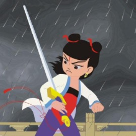
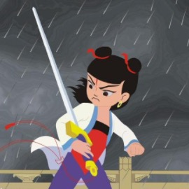

ConvNetCoffee
You can see this demo is exactly same as ConvNetJS written by @Karpathy (Stanford Deep Learning).
I was deeply intrigued then decide to rewrite this whole project into CoffeeScript in a little functional programming way. (^0^)
Despite all others said that you should not build wheels again. I think, as an Software Mechanist:
Its the only way to truely understand how things work is dissecting then build it by yourself, while demons must hide inside the details and BUG you all the time.ConvNetCoffee is composed by CoffeeScripts each contains only one specific part of Neural Network for me to fully study and easily understand.
The network definition below can be tailored to generate various results, hope you have fun!
Report questions/bugs/suggestions to 783627014@qq.com @NeZha.
Choose your own image:
Original Image
Neural Network output
Learning rate:
The learning rate should probably be decreased over time (slide left) to let the network better overfit the training data. It's nice to not have to worry about overfitting.
You can upload your own image above (click Choose File), or you can click on any of the images below to load them.
 
